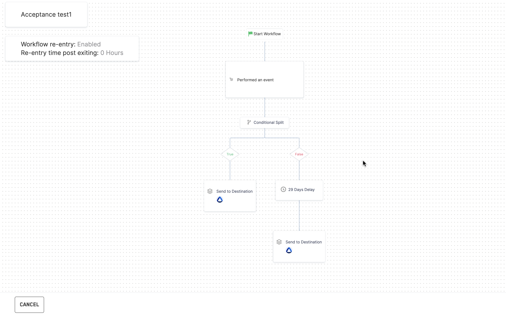

You divide your workflow into two mutually exclusive branches based on a condition. Users fulfilling the condition move to the True branch and others to the False branch. Unlike a Multi-branch split, where a user can be part of multiple branches, in a true-false split, a user can only qualify for the True branch or the False branch.
